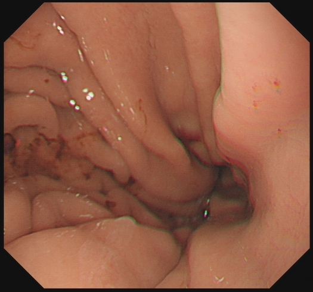
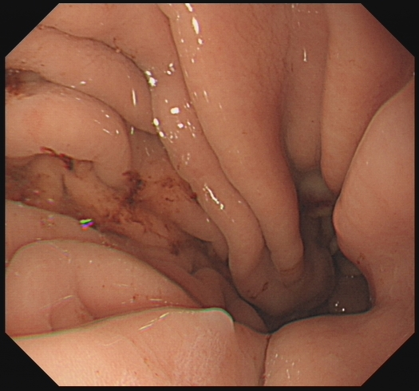
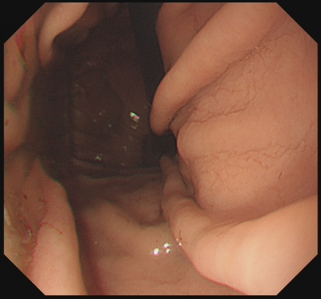
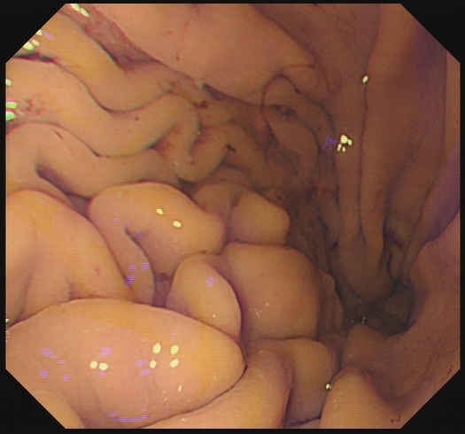
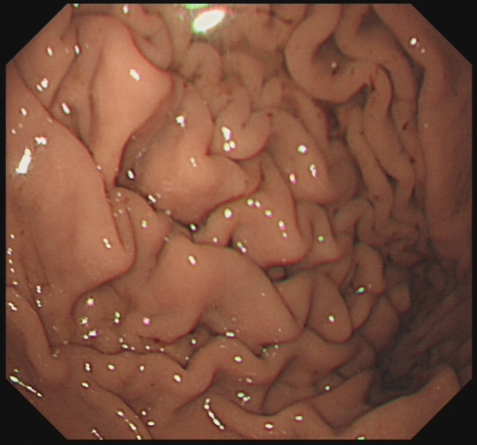
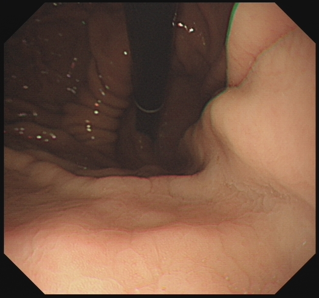
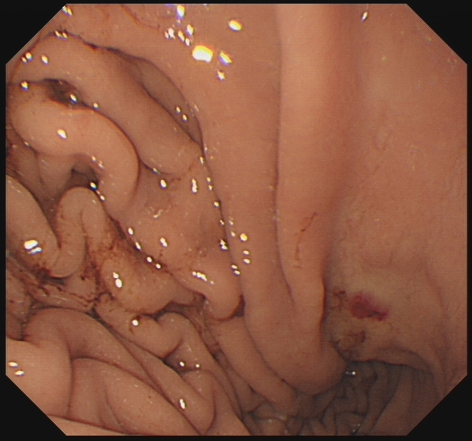
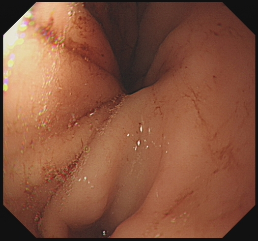
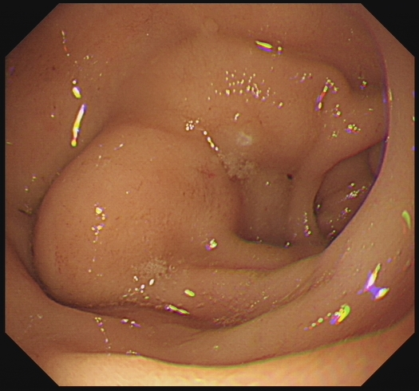
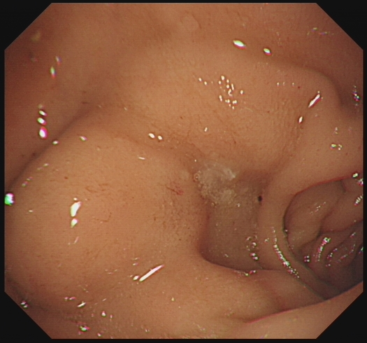

L7_331e4576_forrest · forrest · IIA · 仅 compare 路径找到候选证据没有 blind 支持帧需医生确认报告等级
1. 等级与最终判定
2. Grounding 逐 finding 裁决
GRD_a4f099acb009caf0 · 胃体 · 溃疡
报告片段：黏膜光整，色泽略苍白，下部胃体小弯近胃角见一大小约1.0cm溃疡灶，中央见血管裸露，有少量渗血，组织夹3枚夹闭，周边黏膜充血水肿明显，活检。
状态 blind_supported_match · candidate digest f5e0a30a558c8d72 · compare.best 已明确忽略
Blind：所有图像均显示胃体黏膜存在不同程度的炎症表现，包括充血、水肿、皱襞增粗及糜烂出血。
Compare：活检操作本身未在图像中直接显示，仅根据报告推断。

RF_66e44948ab15edae胃体 · 模态未知 · 0.9942

RF_5df8715d390eab30胃体 · 模态未知 · 0.9995

RF_def3259f922a05e9胃体 · white_light · 0.9997

RF_888cbcbca4d756a2胃体 · 模态未知 · 0.9996

RF_56340b8baf766fe6胃体 · 模态未知 · 0.9995

RF_338505c96abf3fb1胃体 · 模态未知 · 0.9996

RF_d9af881d99ca888c胃体 · white_light · 1.0

RF_f9dfbcd7ffff58c4胃体 · white_light · 0.9999
Finding 1：黏膜光整 聚合状态 compare_only_candidate；blind —；compare RF_56340b8baf766fe6, RF_f9dfbcd7ffff58c4, RF_888cbcbca4d756a2, RF_66e44948ab15edae, RF_5df8715d390eab30, RF_d9af881d99ca888c, RF_338505c96abf3fb1, RF_def3259f922a05e9
支持证据帧：
Finding 2：色泽略苍白 聚合状态 compare_only_candidate；blind —；compare RF_56340b8baf766fe6, RF_f9dfbcd7ffff58c4, RF_888cbcbca4d756a2, RF_66e44948ab15edae, RF_5df8715d390eab30, RF_d9af881d99ca888c, RF_338505c96abf3fb1, RF_def3259f922a05e9
支持证据帧：
Finding 3：下部胃体小弯近胃角溃疡灶 聚合状态 compare_only_candidate；blind —；compare RF_66e44948ab15edae, RF_5df8715d390eab30, RF_d9af881d99ca888c, RF_338505c96abf3fb1
支持证据帧：
Finding 4：中央见血管裸露 聚合状态 compare_only_candidate；blind —；compare RF_66e44948ab15edae, RF_5df8715d390eab30, RF_d9af881d99ca888c
支持证据帧：
Finding 5：少量渗血 聚合状态 compare_only_candidate；blind —；compare RF_66e44948ab15edae, RF_5df8715d390eab30, RF_d9af881d99ca888c
支持证据帧：
Finding 6：组织夹3枚夹闭 聚合状态 compare_only_candidate；blind —；compare RF_338505c96abf3fb1, RF_def3259f922a05e9
支持证据帧：
Finding 7：周边黏膜充血水肿明显 聚合状态 blind_supported_match；blind RF_66e44948ab15edae, RF_5df8715d390eab30, RF_def3259f922a05e9, RF_888cbcbca4d756a2, RF_56340b8baf766fe6, RF_338505c96abf3fb1, RF_d9af881d99ca888c, RF_f9dfbcd7ffff58c4；compare RF_66e44948ab15edae, RF_5df8715d390eab30, RF_d9af881d99ca888c, RF_338505c96abf3fb1
支持证据帧：
Finding 8：活检 聚合状态 rejected；blind —；compare —
支持证据帧：
3. 必需部位补帧
本例没有缺失的必需部位。
4. 最终 panel
批准时必须满足族级范围，医生证据帧与部位帧会自动勾入。
RF_66e44948ab15edae胃体 · 模态未知 · 0.9942
RF_5df8715d390eab30胃体 · 模态未知 · 0.9995
RF_def3259f922a05e9胃体 · white_light · 0.9997
RF_888cbcbca4d756a2胃体 · 模态未知 · 0.9996
RF_56340b8baf766fe6胃体 · 模态未知 · 0.9995
RF_338505c96abf3fb1胃体 · 模态未知 · 0.9996
RF_d9af881d99ca888c胃体 · white_light · 1.0
RF_f9dfbcd7ffff58c4胃体 · white_light · 0.9999

RF_8f08eacceeb0b206胃角 · white_light · 0.9989

RF_9bac9d19c04a8ec8胃角 · white_light · 0.9964

RF_2e89b53468b17f4c胃角 · white_light · 0.9955

RF_ba8a55d2f531df63十二指肠 · white_light · 0.9999

RF_8c32b809b95b5f03十二指肠 · white_light · 0.9999

RF_c8c3eef6a795c66e十二指肠 · white_light · 0.9998